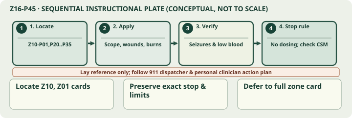

Z16-P45 · Field reference atlas · New manuscript
Layperson First-Aid, Wound Care, Splinting and Monitoring Index
Index layperson, dispatcher, and clinician boundaries across trauma, wounds, burns, fractures, seizures, hypoglycemia, and documentation in Z10.
When it applies · Backcountry and home emergency stabilization awaiting qualified EMS, clinical care.
Equipment · Full offline reader (Z10, Z01), primary zone cards, and local emergency and agency references.

Actions
- Enforce layperson scope strictly (Z10-P01): zero unauthorized medication mg, mL dosing, zero invasive procedures (tracheotomy, cutting wounds, bites, suturing), and prompt 911, dispatcher activation for red flags.[A03, M01, M22]
- Clean minor wounds with safe potable water and clean dressings (Z10-P20), cool thermal burns with cool running water (no ice, butter, Z10-P26), pad extremity splints across adjacent joints while checking distal circulation, sensation, motion (CSM, Z10-P32), and follow CDC seizure timing (>5 min = 911, Z10-P53, M29) and awake-only fast sugar for known hypoglycemia (Z10-P54, M30).[A03, M06, M08, M29, M30]
- Record timed vital trends, allergies, medications, and interventions (SAMPLE, AVPU notes, Z10-P70) to hand directly to EMS or hospital clinicians.[A03, M22]
Failure recognition · Giving oral sugar to an unconscious diabetic, restraining a seizing patient, or skipping distal CSM checks after splinting causes aspiration or limb ischemia.[M08, M29, M30]
Verify · Layperson boundaries, CSM splinting checks, seizure, hypoglycemia triggers, and written patient logs remain preserved.[M06, M29, M30]
Stop or change course · Stop lay field management and evacuate or call 911 immediately for worsening alertness, airway compromise, uncontrolled bleeding, or loss of distal pulse, sensation.[M01, M08]
Evidence and editorial notes
- A03 · CDC · How to Make Water Safe in an Emergency (2024-09-19)
- Section: Cross-zone public-health, water, medicine, and sanitation linkage · Conditions: Indexing Z04, Z10, Z13, and Z14 hygiene, boiling, and clinical red flags
Support: Cross-referencing water treatment, wound care, cold-chain food safety, and poison escalation preserves consistent public-health thresholds across zones.
Limitations: Condensed tables never authorize skipping altitude boiling rules, chemical-source rejection, or clinician evaluation. · Conflicting evidence: None noted.
Editorial note: Prevents cross-zone public-health drift. · Specialist reviewer: Public-health reviewer
Primary source · checked 2026-11-24 - M01 · American College of Surgeons · STOP THE BLEED Training Course (current web edition)
- Section: Ensure Your Own Safety; Find Life-Threatening Bleeding; Compress · Conditions: Lay responder encountering severe external hemorrhage
Support: Ensure scene safety first, call 911, expose the wound to locate life-threatening bleeding, and apply firm continuous direct pressure with clean gauze or cloth.
Limitations: Does not replace formal hands-on Stop the Bleed training or EMS trauma care. · Conflicting evidence: None across ACS/ARC guidelines.
Editorial note: Separates life-threatening arterial/venous hemorrhage from minor scrapes. · Specialist reviewer: Wilderness medicine and trauma EMS
Primary source · checked 2026-11-24 - M06 · NIH / MedlinePlus · Wounds and Injuries (current web edition)
- Section: Minor Wound Cleaning, Protection, and Infection Red Flags · Conditions: Superficial cuts, scrapes, and abrasions with potable water available
Support: Rinse minor wounds thoroughly with clean potable water, cover with a clean sterile dressing, and monitor for worsening redness, warmth, swelling, pus, red streaks, or fever.
Limitations: Deep punctures, animal bites, retained foreign bodies, or heavily contaminated wounds require clinical evaluation and tetanus review. · Conflicting evidence: None; separates clean potable rinsing from harsh chemical wound scrubbing.
Editorial note: Anchors field wound hygiene and infection escalation cards. · Specialist reviewer: Wilderness medicine and wound care
Primary source · checked 2026-11-24 - M08 · AHA and American Red Cross · 2024 Guidelines for First Aid (2024)
- Section: Anaphylaxis · Conditions: Suspected severe allergic reaction; community first aid; prescribed epinephrine or applicable local protocol
Support: Activate EMS promptly and assist with epinephrine under the relevant device or action plan. Follow professional direction for subsequent care.
Limitations: Pediatric device selection, subsequent dose, timing and transfer require product, patient and local protocol. · Conflicting evidence: See A02 claim audit for boundaries.
Editorial note: Separates assisting with a patient's prescribed auto-injector from lay prescribing. · Specialist reviewer: Allergy/immunology and EMS
Primary source · checked 2026-11-25 - M22 · AHA and American Red Cross · 2024 Guidelines for First Aid (2024)
- Section: Positioning of the Ill or Injured Person · Conditions: Decreased alertness with normal breathing; no suspected neck/back/hip/pelvis injury
Support: Side-lying recovery position can be reasonable; reassess breathing continuously and act if it becomes abnormal.
Limitations: Avoid unnecessary movement after suspected spinal or pelvic injury. A recovery position may delay recognition of apnea if unmonitored. · Conflicting evidence: See A02 claim audit for boundaries.
Editorial note: Anchors airway-protection positioning and handoff documentation. · Specialist reviewer: EMS and emergency medicine
Primary source · checked 2026-11-25 - M29 · CDC · First Aid for Seizures (2024)
- Section: When to call 911; steps to keep the person safe · Conditions: Witnessed seizure; community first-aid setting
Support: Time the seizure, protect against nearby hazards, avoid restraints and mouth objects and call 911 for listed red flags, including longer than five minutes or breathing or waking difficulty.
Limitations: Known personal action plan and dispatcher take precedence. Do not assume that shaking ending means breathing is normal. · Conflicting evidence: See A02 claim audit for boundaries.
Editorial note: Added in A02 to separate a consequential source boundary. · Specialist reviewer: EMS and neurology
Primary source · checked 2026-11-25 - M30 · CDC · Treatment of Low Blood Sugar (2024)
- Section: Treating low blood sugar; treating severely low blood sugar · Conditions: Suspected hypoglycemia with known diabetes
Support: Follow the person’s plan. Give fast-acting sugar only if awake and able to swallow. Severe symptoms, inability to swallow or unconsciousness warrant prompt emergency help.
Limitations: No dose or schedule is implied for every patient. Rescue glucagon use depends on patient-specific prescription, training and emergency instructions. · Conflicting evidence: See A02 claim audit for boundaries.
Editorial note: Added in A02 to separate a consequential source boundary. · Specialist reviewer: EMS and diabetes clinician
Primary source · checked 2026-11-25
Source lineage · New manuscript (Z16 P20 clinical index) · Classification · New manuscript.